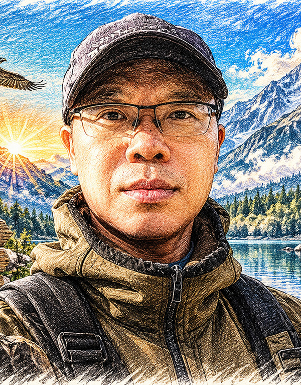

美術設計基礎
- 繪畫與視覺創作
- 廣告設計專長
- 美學與構圖能力
JAMES CHAN
「以創意為起點，以技術為實力，以學習突破未來。」
從設計出發，不斷累積技術，持續迎接每個時代的改變。
具備美術設計背景：國中曾獲美術比賽第一名，高中就讀廣告設計科，並累積多項校外設計競賽經驗；服役期間獲選國防部美工單位，持續發揮設計專長。
投入職場後，從電腦美工技術起步，逐步拓展至網頁設計、Flash 動畫、網站架設、線上漫畫、Flash Game、WEB TV、網路管理及電子商務等領域，累積跨領域實務經驗。
近年持續學習 AI 工具，應用於視覺設計、圖片編修、文案撰寫及工作流程優化，期望結合過去的設計與數位技術經驗，提升工作效率與成果品質。秉持持續學習、解決問題及勇於接受新技術的態度，讓專業能力與時俱進。

這條線走得比看起來長。每一次轉換都不是換跑道，是把同一件事做得更完整：讓一張圖、一個版位，真的能替客戶把東西賣出去。
三年制高職1994/6 — 1997/6
手繪、水彩與構成訓練打底；國中時期曾獲美術比賽第一名，設計的興趣從這裡變成專業。
電腦技術人員8 個月
3D MAX 與 Adobe 繪圖軟體進駐、電腦硬體更新維護、區域網路佈置與學員電腦說明。
網頁動畫設計師2 年 1 個月
線上動漫網站頁面規劃與架設、動畫與 Flash 遊戲開發、漫畫月刊封面設計。
網頁設計師2003 — 2005
企業網站規劃與企劃、動畫與美工產品設計、線上影片處理與網路行銷。
網頁設計師9 個月
建材傢俱零售的電子商務管理、平面美工、網頁設計與電腦維護，第一次把「設計」接到「賣」。
網頁、動畫、程式設計師10 個月
客戶網站規劃與設計、程式除錯、與客戶洽談網站內容並建立規劃系統。
網頁設計／網管工程師1 年 3 個月
鞋類與服飾零售的公司網站架設、網頁系統程式規劃、總公司電腦與網路維護、門市 POS 支援。
網站美工管理專員1 年 1 個月
雅馬遜平台化妝與保養商品頁設計、電子商務網站管理、產品資料整理與平面美工。
電子商務技術主管11 年 1 個月
首飾與貴金屬電商：各大電商網站管理、網頁技術處理、AI 商品主圖與詳情圖設計、SEO＋GEO 結構化、商品行銷文案。
網頁設計／電子商務／網購行銷全職或兼職皆可
尋找能把設計、網站與電商串在一起的位置；錄取後可隨時上班，也接受遠端合作。
設計、技術、電子商務不是三條平行的路，是同一條流程的三段。以下八格整理自我自己的「專業九宮格」， 每一格都能對應到下面作品與經歷裡的具體工作。
設計 × 技術 ×
電子商務
從版面到訂單，中間沒有斷點。
持續學習，不斷進化。
十五個網站專案——品牌官網、電商購物站、集團與經紀形象站，七件 Flash 互動遊戲，九支近期製作的銀飾商品影片，七組電商商品主圖，以及六組電商後台與 AI 工具的系統規劃畫面。網站與遊戲是當時的實際成品畫面，影片為 9:16 直式短片，商品主圖為多品項拼版的主圖組合，系統規劃為後台介面與流程的實際畫面，點開皆可放大檢視。
以上畫面的商標、商品與內容版權屬原業主所有，此處僅作個人作品紀錄與能力說明之用。
由近到遠排列。左側是任職期間，中間是公司與產業，右側是當時實際負責的工作內容。
需要一個能把網站做完、也把生意做起來的人？